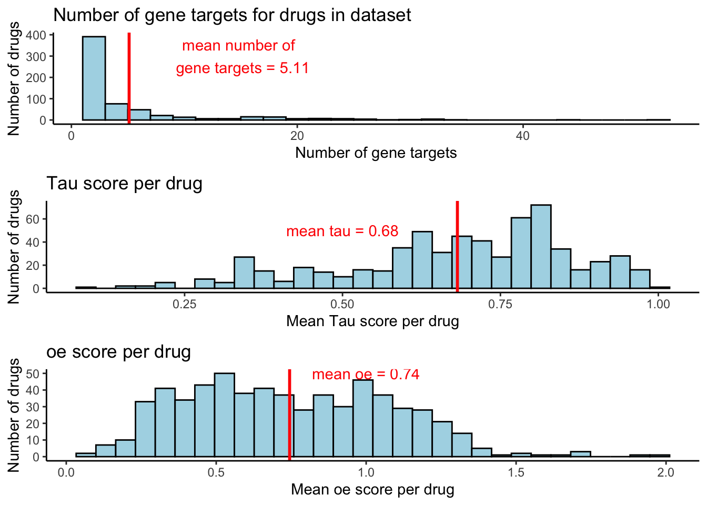
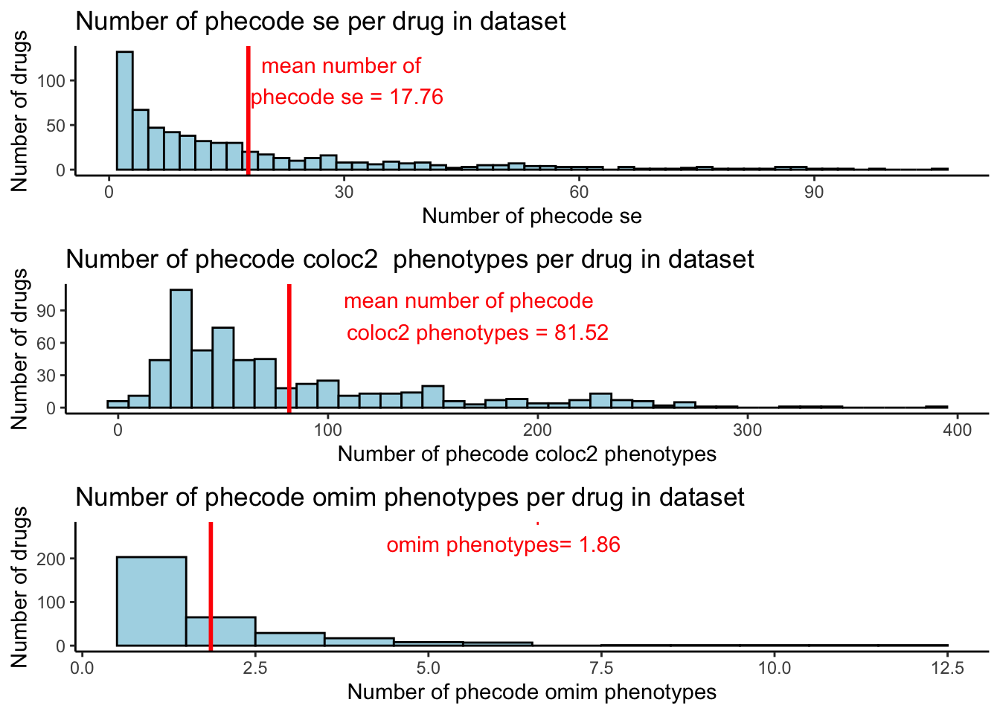
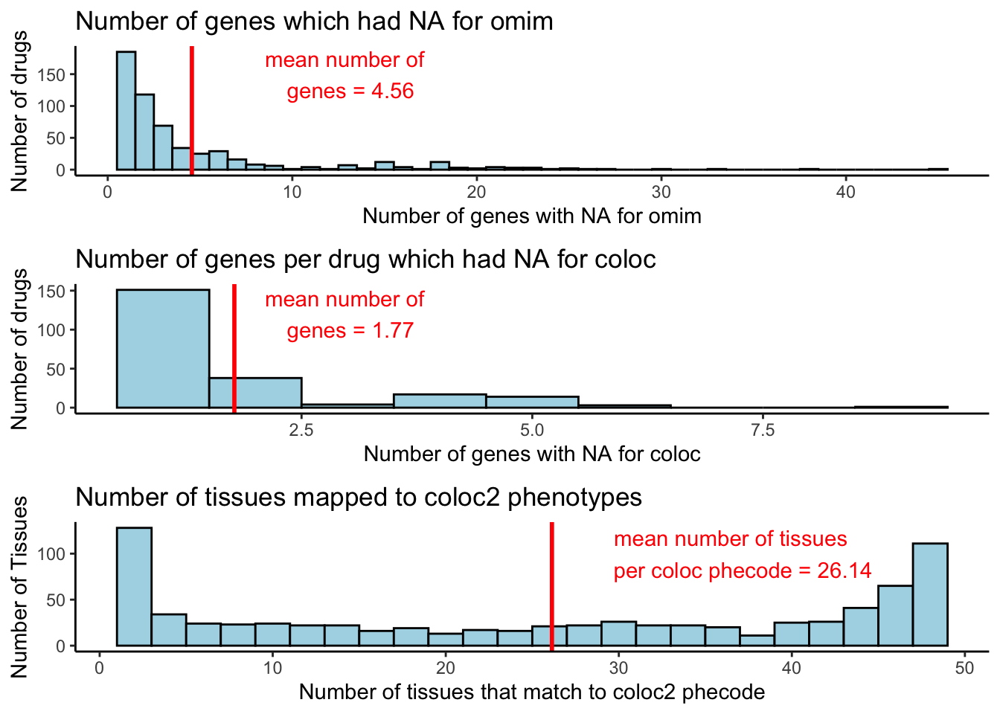

Drug dataset
AineDuffy
2020-06-06
Last updated: 2020-06-22
Checks: 7 0
Knit directory: DG_WF/
This reproducible R Markdown analysis was created with workflowr (version 1.6.2). The Checks tab describes the reproducibility checks that were applied when the results were created. The Past versions tab lists the development history.
Great! Since the R Markdown file has been committed to the Git repository, you know the exact version of the code that produced these results.
Great job! The global environment was empty. Objects defined in the global environment can affect the analysis in your R Markdown file in unknown ways. For reproduciblity it’s best to always run the code in an empty environment.
The command set.seed(20200414) was run prior to running the code in the R Markdown file. Setting a seed ensures that any results that rely on randomness, e.g. subsampling or permutations, are reproducible.
Great job! Recording the operating system, R version, and package versions is critical for reproducibility.
Nice! There were no cached chunks for this analysis, so you can be confident that you successfully produced the results during this run.
Great job! Using relative paths to the files within your workflowr project makes it easier to run your code on other machines.
Great! You are using Git for version control. Tracking code development and connecting the code version to the results is critical for reproducibility.
The results in this page were generated with repository version 8d631da. See the Past versions tab to see a history of the changes made to the R Markdown and HTML files.
Note that you need to be careful to ensure that all relevant files for the analysis have been committed to Git prior to generating the results (you can use wflow_publish or wflow_git_commit). workflowr only checks the R Markdown file, but you know if there are other scripts or data files that it depends on. Below is the status of the Git repository when the results were generated:
Ignored files:
Ignored: .DS_Store
Ignored: analysis/.DS_Store
Untracked files:
Untracked: analysis/sider.R
Untracked: analysis/siderdata_v4.Rmd
Unstaged changes:
Modified: analysis/siderdata_intial.Rmd
Note that any generated files, e.g. HTML, png, CSS, etc., are not included in this status report because it is ok for generated content to have uncommitted changes.
These are the previous versions of the repository in which changes were made to the R Markdown (analysis/Drug_dataset_SIDER2.Rmd) and HTML (docs/Drug_dataset_SIDER2.html) files. If you’ve configured a remote Git repository (see ?wflow_git_remote), click on the hyperlinks in the table below to view the files as they were in that past version.
| File | Version | Author | Date | Message |
|---|---|---|---|---|
| Rmd | 8d631da | AineDuffy | 2020-06-22 | Add intial model results |
| html | 850396e | AineDuffy | 2020-06-18 | Build site. |
| Rmd | 265ee8f | AineDuffy | 2020-06-18 | Running first basic model1 |
| html | b7c20b1 | AineDuffy | 2020-06-18 | Build site. |
| Rmd | 53d4b61 | AineDuffy | 2020-06-18 | Running first basic model |
| html | 2838c7e | AineDuffy | 2020-06-18 | Build site. |
| Rmd | 77c83c2 | AineDuffy | 2020-06-18 | Running first basic model |
Overview of dataset
Drug dataset: - target genes - sider V2 se matched to phecode - se adr score - omim matched to phecode - coloc tissue and phenotype matched to phecode at pph4 >08 - Tau and OE score
drugname entrez_id symbol PHECODE_SE se_adr withdrawn Tau
1 lepirudin 2147 F2 411.2 0.7309823 <NA> 0.9735913
2 lepirudin 2147 F2 411.2 0.7309823 <NA> 0.9735913
3 lepirudin 2147 F2 411.2 0.7309823 <NA> 0.9735913
4 lepirudin 2147 F2 411.2 0.7309823 <NA> 0.9735913
5 lepirudin 2147 F2 411.2 0.7309823 <NA> 0.9735913
6 lepirudin 2147 F2 411.2 0.7309823 <NA> 0.9735913
omim_phecode Tissue coloc08_phecode Source oe_lof_upper
1 627.4 Artery_Tibial 365.0 UKBB&Saige 0.536
2 627.4 Artery_Tibial 401.1 UKBB&Saige 0.536
3 627.4 Artery_Tibial 451.0 UKBB&Saige 0.536
4 627.4 Brain_Cerebellum 401.1 UKBB&Saige 0.536
5 627.4 Brain_Cerebellum 451.0 UKBB&Saige 0.536
6 627.4 Artery_Coronary 429.3 ukbb 0.536[1] "589 unique drugs, 658 unique genes, 672 unique se, 97 unique omim phecode, 765 unique coloc2 phecode"
saige ukbb UKBB&Saige
693 233 94 [1] "51 phecodes are in unique omim phecodes and se"[1] "336 phecodes are in unique coloc phecodes and se"Types of phecodes
Warning: Removed 2 rows containing non-finite values (stat_bin).
| Version | Author | Date |
|---|---|---|
| 2838c7e | AineDuffy | 2020-06-18 |
Data descriptives
`summarise()` ungrouping output (override with `.groups` argument)
`summarise()` ungrouping output (override with `.groups` argument)Warning: Removed 2 rows containing non-finite values (stat_bin).

| Version | Author | Date |
|---|---|---|
| 2838c7e | AineDuffy | 2020-06-18 |

| Version | Author | Date |
|---|---|---|
| 2838c7e | AineDuffy | 2020-06-18 |
Unique_Number Mean Std
Drug gene targets 658 4.9796265 6.4772962
Tau - 0.6803556 0.1818899
Constraint - 0.7453552 0.3432504
Side effect 672 13.4567063 13.5091394
Omim 97 1.8666667 1.5925783
Coloc Phenotype 765 80.6666667 66.3358518Dataset for model
- Dataset - 589 unique drugs. 2933 unique drug-gene pairs X 672 unique SE = 1,970,976 lines
drugname entrez_id symbol PheCode PHECODE_SE omim_phecode
4105 conjugated estrogens 2099 ESR1 411.2 1 0
7817 tirofiban 3690 ITGB3 411.2 1 0
82 almotriptan 3351 HTR1B 411.2 1 NA
2036 carvedilol 152 ADRA2C 411.2 1 NA
2442 carvedilol 153 ADRB1 411.2 1 NA
3047 carvedilol 3757 KCNH2 411.2 1 NA
coloc08_phecode
4105 1
7817 1
82 1
2036 1
2442 1
3047 1[1] "0 if gene doesnt match phecode se. NA if omim or coloc never reported gene"$PHECODE_SE
0 1
1928048 42928
$omim_phecode
0 1 NA's
9317 25 1961634
$coloc08_phecode
0 1 NA's
37024 731 1933221 $PHECODE_SE
0 1
1928048 42928
$omim_phecode
0 1
1970951 25
$coloc08_phecode
0 1
1970245 731 [1] "Number of phecode se, coloc and omim matches per drug-gene pair"`summarise()` regrouping output by 'drugname' (override with `.groups` argument)# A tibble: 6 x 5
# Groups: drugname [1]
drugname entrez_id total_se total_coloc total_omim
<chr> <chr> <dbl> <dbl> <dbl>
1 acamprosate 116443 35 1 0
2 acamprosate 116444 35 3 0
3 acamprosate 2554 35 0 0
4 acamprosate 2555 35 1 0
5 acamprosate 2556 35 0 0
6 acamprosate 2557 35 1 0 total percentage Mean Std
se phecode trait per DG pair 42928 2.18 14.64 14.63
coloc phecode trait per DG pair 731 0.04 0.25 0.63
omim phecode trait per DG pair 25 0.00 0.01 0.091.logistic model 2.mixed model
logmod_coloc=glm(PHECODE_SE~coloc08_phecode, data = Byphecode3, family = 'binomial')
summary(logmod_coloc)
Call:
glm(formula = PHECODE_SE ~ coloc08_phecode, family = "binomial",
data = Byphecode3)
Deviance Residuals:
Min 1Q Median 3Q Max
-0.2081 -0.2081 -0.2081 -0.2081 2.7726
Coefficients:
Estimate Std. Error z value Pr(>|z|)
(Intercept) -3.821914 0.004921 -776.641 <2e-16 ***
coloc08_phecode 17.387981 19.802898 0.878 0.38
---
Signif. codes: 0 '***' 0.001 '**' 0.01 '*' 0.05 '.' 0.1 ' ' 1
(Dispersion parameter for binomial family taken to be 1)
Null deviance: 413464 on 1970975 degrees of freedom
Residual deviance: 407857 on 1970974 degrees of freedom
AIC: 407861
Number of Fisher Scoring iterations: 12logmod_omim=glm(PHECODE_SE~omim_phecode, data = Byphecode3, family = 'binomial')
summary(logmod_omim)
Call:
glm(formula = PHECODE_SE ~ omim_phecode, family = "binomial",
data = Byphecode3)
Deviance Residuals:
Min 1Q Median 3Q Max
-0.2098 -0.2098 -0.2098 -0.2098 2.7667
Coefficients:
Estimate Std. Error z value Pr(>|z|)
(Intercept) -3.805322 0.004881 -779.572 <2e-16 ***
omim_phecode 14.371349 23.893609 0.601 0.548
---
Signif. codes: 0 '***' 0.001 '**' 0.01 '*' 0.05 '.' 0.1 ' ' 1
(Dispersion parameter for binomial family taken to be 1)
Null deviance: 413464 on 1970975 degrees of freedom
Residual deviance: 413273 on 1970974 degrees of freedom
AIC: 413277
Number of Fisher Scoring iterations: 9se_predictbycoloc=glmer(PHECODE_SE~coloc08_phecode+(1|PheCode), data = Byphecode3, family = 'binomial')
summary(se_predictbycoloc)Generalized linear mixed model fit by maximum likelihood (Laplace
Approximation) [glmerMod]
Family: binomial ( logit )
Formula: PHECODE_SE ~ coloc08_phecode + (1 | PheCode)
Data: Byphecode3
AIC BIC logLik deviance df.resid
346166.0 346203.4 -173080.0 346160.0 1970973
Scaled residuals:
Min 1Q Median 3Q Max
-0.559 -0.160 -0.089 -0.043 39.053
Random effects:
Groups Name Variance Std.Dev.
PheCode (Intercept) 2.685 1.639
Number of obs: 1970976, groups: PheCode, 672
Fixed effects:
Estimate Std. Error z value Pr(>|z|)
(Intercept) -4.85417 0.04635 -104.74 <2e-16 ***
coloc08_phecode 24.64796 2.15747 11.42 <2e-16 ***
---
Signif. codes: 0 '***' 0.001 '**' 0.01 '*' 0.05 '.' 0.1 ' ' 1
Correlation of Fixed Effects:
(Intr)
colc08_phcd 0.005 se_predictbyomim=glmer(PHECODE_SE~omim_phecode+(1|PheCode), data = Byphecode3, family = 'binomial')
summary(se_predictbyomim)Generalized linear mixed model fit by maximum likelihood (Laplace
Approximation) [glmerMod]
Family: binomial ( logit )
Formula: PHECODE_SE ~ omim_phecode + (1 | PheCode)
Data: Byphecode3
AIC BIC logLik deviance df.resid
350934.0 350971.5 -175464.0 350928.0 1970973
Scaled residuals:
Min 1Q Median 3Q Max
-0.554 -0.164 -0.089 -0.043 38.997
Random effects:
Groups Name Variance Std.Dev.
PheCode (Intercept) 2.687 1.639
Number of obs: 1970976, groups: PheCode, 672
Fixed effects:
Estimate Std. Error z value Pr(>|z|)
(Intercept) -4.83532 0.02612 -185.103 <2e-16 ***
omim_phecode 20.12196 16.00034 1.258 0.209
---
Signif. codes: 0 '***' 0.001 '**' 0.01 '*' 0.05 '.' 0.1 ' ' 1
Correlation of Fixed Effects:
(Intr)
omim_phecod 0.007 multi=glm(PHECODE_SE~coloc08_phecode+omim_phecode, data = Byphecode3, family = 'binomial')
summary(multi)
Call:
glm(formula = PHECODE_SE ~ coloc08_phecode + omim_phecode, family = "binomial",
data = Byphecode3)
Deviance Residuals:
Min 1Q Median 3Q Max
-0.208 -0.208 -0.208 -0.208 2.773
Coefficients:
Estimate Std. Error z value Pr(>|z|)
(Intercept) -3.822507 0.004923 -776.537 <2e-16 ***
coloc08_phecode 17.388573 19.802898 0.878 0.380
omim_phecode 17.388573 107.082233 0.162 0.871
---
Signif. codes: 0 '***' 0.001 '**' 0.01 '*' 0.05 '.' 0.1 ' ' 1
(Dispersion parameter for binomial family taken to be 1)
Null deviance: 413464 on 1970975 degrees of freedom
Residual deviance: 407665 on 1970973 degrees of freedom
AIC: 407671
Number of Fisher Scoring iterations: 12- Dataset - 589 unique drugs X 672 unique SE = 395,808 lines All genes aggregated per drug
drugname PHECODE_SE omim_phecode coloc08_phecode Phecode
1 acamprosate 0 0 0 411.2
2 acarbose 0 0 0 411.2
3 acebutolol 0 0 0 411.2
4 aceclofenac 0 0 0 411.2
5 acetaminophen 0 0 0 411.2
6 acetazolamide 0 0 0 411.2$PHECODE_SE
0 1
387882 7926
$omim_phecode
0 1
395784 24
$coloc08_phecode
0 1
395318 490 [1] "Number of unique phecode se, coloc and omim matches per drug"`summarise()` ungrouping output (override with `.groups` argument)# A tibble: 6 x 4
drugname total_se total_coloc total_omim
<chr> <dbl> <dbl> <dbl>
1 acamprosate 35 9 0
2 acarbose 1 0 0
3 acebutolol 7 0 0
4 aceclofenac 1 0 0
5 acetaminophen 5 0 0
6 acetazolamide 6 1 0 total percentage Mean Std
se phecode trait per drug 7926 2.00 13.46 13.51
coloc phecode trait per drug 490 0.12 0.83 1.65
omim phecode trait per drug 24 0.01 0.04 0.211.logistic model 2.mixed model
logmod_coloc_drug=glm(PHECODE_SE~coloc08_phecode, data = Byphecode_agggregategene, family = 'binomial')
summary(logmod_coloc_drug)
Call:
glm(formula = PHECODE_SE ~ coloc08_phecode, family = "binomial",
data = Byphecode_agggregategene)
Deviance Residuals:
Min 1Q Median 3Q Max
-0.1949 -0.1949 -0.1949 -0.1949 2.8190
Coefficients:
Estimate Std. Error z value Pr(>|z|)
(Intercept) -3.95437 0.01171 -337.772 <2e-16 ***
coloc08_phecode 19.52044 65.74816 0.297 0.767
---
Signif. codes: 0 '***' 0.001 '**' 0.01 '*' 0.05 '.' 0.1 ' ' 1
(Dispersion parameter for binomial family taken to be 1)
Null deviance: 77686 on 395807 degrees of freedom
Residual deviance: 73823 on 395806 degrees of freedom
AIC: 73827
Number of Fisher Scoring iterations: 14logmod_omim_drug=glm(PHECODE_SE~omim_phecode, data = Byphecode_agggregategene, family = 'binomial')
summary(logmod_omim_drug)
Call:
glm(formula = PHECODE_SE ~ omim_phecode, family = "binomial",
data = Byphecode_agggregategene)
Deviance Residuals:
Min 1Q Median 3Q Max
-0.2008 -0.2008 -0.2008 -0.2008 2.7978
Coefficients:
Estimate Std. Error z value Pr(>|z|)
(Intercept) -3.89359 0.01136 -342.641 <2e-16 ***
omim_phecode 16.45965 66.28803 0.248 0.804
---
Signif. codes: 0 '***' 0.001 '**' 0.01 '*' 0.05 '.' 0.1 ' ' 1
(Dispersion parameter for binomial family taken to be 1)
Null deviance: 77686 on 395807 degrees of freedom
Residual deviance: 77498 on 395806 degrees of freedom
AIC: 77502
Number of Fisher Scoring iterations: 11se_predictbycoloc_groupgene=glmer(PHECODE_SE~coloc08_phecode+(1|Phecode), family = 'binomial',data = Byphecode_agggregategene)Warning in checkConv(attr(opt, "derivs"), opt$par, ctrl = control$checkConv, :
unable to evaluate scaled gradientWarning in checkConv(attr(opt, "derivs"), opt$par, ctrl = control$checkConv, :
Model failed to converge: degenerate Hessian with 1 negative eigenvaluessummary(se_predictbycoloc_groupgene)Warning in vcov.merMod(object, use.hessian = use.hessian): variance-covariance matrix computed from finite-difference Hessian is
not positive definite or contains NA values: falling back to var-cov estimated from RXWarning in vcov.merMod(object, correlation = correlation, sigm = sig): variance-covariance matrix computed from finite-difference Hessian is
not positive definite or contains NA values: falling back to var-cov estimated from RXGeneralized linear mixed model fit by maximum likelihood (Laplace
Approximation) [glmerMod]
Family: binomial ( logit )
Formula: PHECODE_SE ~ coloc08_phecode + (1 | Phecode)
Data: Byphecode_agggregategene
AIC BIC logLik deviance df.resid
66597.0 66629.7 -33295.5 66591.0 395805
Scaled residuals:
Min 1Q Median 3Q Max
-0.3941 -0.1529 -0.0932 -0.0549 18.2299
Random effects:
Groups Name Variance Std.Dev.
Phecode (Intercept) 1.527 1.236
Number of obs: 395808, groups: Phecode, 672
Fixed effects:
Estimate Std. Error z value Pr(>|z|)
(Intercept) -4.635e+00 5.129e-02 -90.363 <2e-16 ***
coloc08_phecode 1.137e+04 3.032e+06 0.004 0.997
---
Signif. codes: 0 '***' 0.001 '**' 0.01 '*' 0.05 '.' 0.1 ' ' 1
Correlation of Fixed Effects:
(Intr)
colc08_phcd 0.000
convergence code: 0
unable to evaluate scaled gradient
Model failed to converge: degenerate Hessian with 1 negative eigenvaluesse_predictbyomim_groupgene=glmer(PHECODE_SE~omim_phecode+(1|Phecode), family = 'binomial', data = Byphecode_agggregategene )Warning in checkConv(attr(opt, "derivs"), opt$par, ctrl = control$checkConv, : Model is nearly unidentifiable: large eigenvalue ratio
- Rescale variables?summary(se_predictbyomim_groupgene)Generalized linear mixed model fit by maximum likelihood (Laplace
Approximation) [glmerMod]
Family: binomial ( logit )
Formula: PHECODE_SE ~ omim_phecode + (1 | Phecode)
Data: Byphecode_agggregategene
AIC BIC logLik deviance df.resid
70011.9 70044.5 -35002.9 70005.9 395805
Scaled residuals:
Min 1Q Median 3Q Max
-0.3914 -0.1584 -0.0936 -0.0554 18.0495
Random effects:
Groups Name Variance Std.Dev.
Phecode (Intercept) 1.519 1.233
Number of obs: 395808, groups: Phecode, 672
Fixed effects:
Estimate Std. Error z value Pr(>|z|)
(Intercept) -4.56715 0.04853 -94.115 <2e-16 ***
omim_phecode 26.85119 45.25484 0.593 0.553
---
Signif. codes: 0 '***' 0.001 '**' 0.01 '*' 0.05 '.' 0.1 ' ' 1
Correlation of Fixed Effects:
(Intr)
omim_phecod 0.000
convergence code: 0
Model is nearly unidentifiable: large eigenvalue ratio
- Rescale variables?
sessionInfo()R version 3.5.3 (2019-03-11)
Platform: x86_64-apple-darwin15.6.0 (64-bit)
Running under: macOS High Sierra 10.13.6
Matrix products: default
BLAS: /Library/Frameworks/R.framework/Versions/3.5/Resources/lib/libRblas.0.dylib
LAPACK: /Library/Frameworks/R.framework/Versions/3.5/Resources/lib/libRlapack.dylib
locale:
[1] en_US.UTF-8/en_US.UTF-8/en_US.UTF-8/C/en_US.UTF-8/en_US.UTF-8
attached base packages:
[1] stats graphics grDevices utils datasets methods base
other attached packages:
[1] lme4_1.1-23 Matrix_1.2-18 gridExtra_2.3 scales_1.1.1
[5] DT_0.13 kableExtra_1.1.0 dplyr_1.0.0 ggplot2_3.3.1
[9] xlsx_0.6.3 stringr_1.4.0 data.table_1.12.8 workflowr_1.6.2
loaded via a namespace (and not attached):
[1] Rcpp_1.0.4 lattice_0.20-40 xlsxjars_0.6.1 utf8_1.1.4
[5] assertthat_0.2.1 rprojroot_1.3-2 digest_0.6.25 R6_2.4.1
[9] backports_1.1.5 evaluate_0.14 httr_1.4.1 pillar_1.4.4
[13] rlang_0.4.6 rstudioapi_0.11 minqa_1.2.4 whisker_0.4
[17] nloptr_1.2.2.1 rmarkdown_2.2 labeling_0.3 splines_3.5.3
[21] webshot_0.5.2 statmod_1.4.34 readr_1.3.1 htmlwidgets_1.5.1
[25] munsell_0.5.0 compiler_3.5.3 httpuv_1.5.2 xfun_0.14
[29] pkgconfig_2.0.3 htmltools_0.4.0 tidyselect_1.1.0 tibble_3.0.1
[33] fansi_0.4.1 viridisLite_0.3.0 crayon_1.3.4 withr_2.2.0
[37] later_1.1.0.1 MASS_7.3-51.5 grid_3.5.3 nlme_3.1-145
[41] gtable_0.3.0 lifecycle_0.2.0 git2r_0.27.1 magrittr_1.5
[45] cli_2.0.2 stringi_1.4.6 farver_2.0.3 fs_1.3.1
[49] promises_1.1.1 xml2_1.2.2 ellipsis_0.3.1 generics_0.0.2
[53] vctrs_0.3.1 boot_1.3-25 tools_3.5.3 glue_1.4.1
[57] purrr_0.3.4 hms_0.5.3 yaml_2.2.1 colorspace_1.4-1
[61] rvest_0.3.5 rJava_0.9-12 knitr_1.28